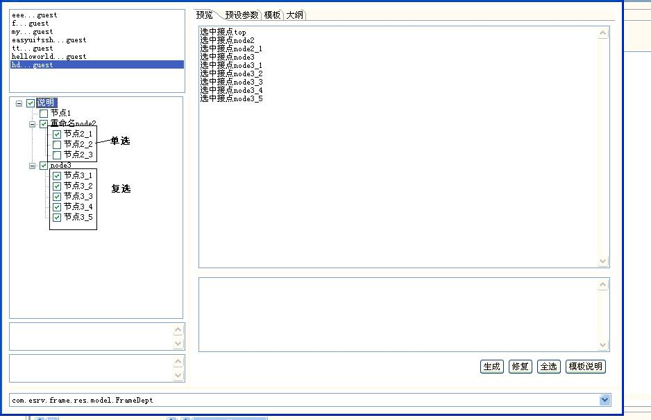

模板采用freemarker语法编写,除freemarker语法之外,另提供如下几种标签.
- 文档头部定义标签:<ftl_head></ftl_head>
定义一个模板的结构,非必要标签.
标签内容是一个json串,包含在{}中,表示一个json对象.如下:
key命名规则,(r)表示单选框(可理解为radio),(c)表示多选框(可理解为checkbox).
如下:
"节点2_1,节点2_2,节点2_3"有相同的后缀，是一组单选框.
,"节点3_1,节点3_2,节点3_3"有相同的后缀，是一组复选框.
节点3_4,节点3_5是两个联动的选择框.
联动规律：
选中"节点3_1,节点3_2,节点3_3"中任意一个节点，都会自动选中"节点3_4,节点3_5",
选中"节点3_4"会自动选中"节点3_5",
即b(c)联动"_b(c),__b(c).....，同理,_b(c)联动__b(c),___b(c)......
将上内容保存到模板,选种任一java文件,右键->预览代码

- 文档标签<ftl_doc></ftl_doc>
模板的使用说明,比如对模板中方法的介绍,使用等等.
- 文件标签<ftl_file></ftl_file>
- 单元标签<ftl_append></ftl_append>
在文件修复时,会将该标签里面的内容添加到指定文件中,源文件中必须有@AppendGenCode标记,程序执行时,先找到含有这个标记的行,然后在该标记的上一行开始添加<ftl_unit>里的内容,如下:将在hellowworld里添加内容"append context"
- @AppendGenCode: 修复文件时,程序执行时,先找到含有这个标记的行,然后在该标记的上一行开始添加<ftl_unit>里的内容
- 提示框标签 :
<ftl_warn></ftl_warn>在预览或代码生产过程中,弹出该标签,即是提示用户,是否继续执行.点击是继续执行,否就停止执行.
<ftl_err></ftl_err>在预览或代码生产过程中,弹出该标签,预览或执行会停止.
这两个标签要放在<ftl_head></ftl_head>中间,一般作为判断模型是否满足该模板使用条件.
eg:
- 包含标签<ftl_include></ftl_include>
eg:<ftl_include id="11d51239-dfdd-47ae-a378-aa404be876e0"/>